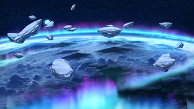

- Welcome to Touhou Wiki!
- Please register to edit. For assistance, check in with our Discord server or IRC channel.
Heaven
Heaven | |
|---|---|
|
 Heaven in Antinomy of Common Flowers
| |
| Location |
Above the Youkai Mountain |
| Residents |
|
Appearances | |
| Official Games | |
| |
Heaven (天界 Tenkai, lit. Celestial World) is a collection of separate realms existing above the Earth. One of them, Bhavaagra (有頂天 Uchouten, lit. Summit of the existent world), is the setting of most final battles in Scarlet Weather Rhapsody, and can be reached by climbing the Youkai Mountain. Bhavaagra is also where Tenshi Hinanawi and her family live. Suika Ibuki may occasionally be seen there as well.
General Information[edit]
Those who have achieved nirvana in the cycle of reincarnation or are judged worthy by the Yama may ascend to Heaven. In recent times, access via nirvana has been put on hold, with the official statement from Heaven being that the realm has become overcrowded and can no longer hold any more people.[1][2] However, Yukari Yakumo has stated that this a lie, and that there is still plenty of free space in Heaven.[3]
Celestials, Angels, and other heavenly beings reside there. These residents generally live carefree lives filled with fishing, song, dance, sake, and peaches. They may also find enjoyment in viewing events that unfold on the Earth.
History[edit]
It's claimed that long ago, Heaven itself was a giant keystone on Earth. When the keystone was pulled out, the planet was devastated.[4] This event occurred so long ago that even some of the oldest known beings such as Eirin Yagokoro had not yet been born.[5]
Terminology[edit]
In Buddhist terminology, "Bhavaagra" has pretty much the same meaning as "Sphere of Neither Perception nor Non-perception". The characters 有頂天 is a translation from Sanskrit of "Bhavaagra" (भवाग्र), and literally means "summit of the existent world." (Furthermore, the transliteration of Sanskrit generally does not use hyphens, so "Bhava-agra" is not quite correct even though it is used often, and "Bhavāgra" is not accurate either.) Furthermore, since it is a summary saying "the highest", this word is frequently colloquially used to mean "to reach the summit and forget the self, riding with the flow" (Japanese-English dictionaries commonly list this as "ecstasy").
According to the cosmology of Buddhism, in the worlds known as the "three realms", the highest is the "formless realm", and even higher is the territory called the "sphere of neither perception nor non-perception". The three realms, in the order of abandoning desire, are split into the desire realm, the form realm, and the formless realm.
- The desire realm (kāmadhātu) is the world in which live those who have still not arrested their appetite, lust and other ordinary desires.
- The form realm (rūpadhātu) is the world in which live those who are at the stage of having abandoned ordinary desires, but are still bound by the general physical notions of time and body.
- The formless realm (ārūpyadhātu) is the world in which live those who have broken out of the bounds of physical things like body etc. and exist only in thought and spirit.
This "formless realm" is the world of those who operate only by thought and spirit, but since thoughts remain, it does not mean that they have abandoned all worldly desires. It is further split into stages according to differences in the condition of abandoning worldly desires, and have pretty much completed the abandonment of all worldly desire (non-perception), but since just a little remains, it also indicates that it is not perfect (non-non-perception). Although it is not perfect, it is, for once, the highest.
Furthermore, it can be known as it is seen, but even as Tenshi Hinanawi has abandoned worldly desire, it does not mean she has abandoned her body. That said, in Gensokyo, as there is only power to remove interference from flying youkai and celestials, it is possible to break in with one's own power in living flesh.
Incidentally, in the cosmology of Buddhism, the phrase hisou-hihisou-sho (非想非非想処) is generally more used than hisou-hihisou-ten (非想非非想天) in its Japanese translation, and when written out in Sanskrit where it came from, it is "नैवसंज्ञानासंज्ञायतन" (naivasaṃjñānāsaṃjñāyatana). Meanwhile, even as the Han characters (非想非非想天) are freely used on the internet, it may just be something that propagated through the countries that use Han characters and then translated back into its original language, but if written out in Sanskrit, it would be "नैवसंज्ञानासंज्ञादेवलोक" (naivasaṃjñānāsaṃjñādēvalōka).
Gallery[edit]
Heaven in Scarlet Weather Rhapsody
See Also[edit]
- Wikipedia article for Deva Realm
- Wikipedia article for Heaven
- Wikipedia article for Nirvana in Mahayana Buddhism
References[edit]
- ↑ Perfect Memento in Strict Sense: Yuyuko — "As the heavens receive all those who have broken from the cycle of transmigration, they've reached their capacity."
- ↑ Immaterial and Missing Power: Sakuya's Scenario — Youmu: "Nirvana is currently forbidden. Heaven is saturated now."
- ↑ Scarlet Weather Rhapsody: Yukari's Scenario — "The heavens use the lands too luxuriously. They say the heavens is too saturated so nirvana is forbidden... What a big lie. They just hate small spaces, that's all... The celestials being people who left their worldliness behind is also a big lie. Heaven is, in fact, the hive for these sly people."
- ↑ Scarlet Weather Rhapsody: Reisen's Ending — Eirin: "When that keystone was pulled out to create heaven, all creatures on earth perished."
- ↑ Scarlet Weather Rhapsody: Reisen's Ending — "Master, did you see that happen...?" "Of course not. This was a very long time ago." The keystone was pulled out before Eirin Yagokoro's time. Eirin has been even alive before Lord Tsukuyomi. Lord Tsukuyomi was the founder of the Moon capital hundreds of millions of years ago. (Note: the statement that the lunar capital was founded hundreds of millions of years ago was made while ZUN was drunk, so this there does remain some doubt about it)